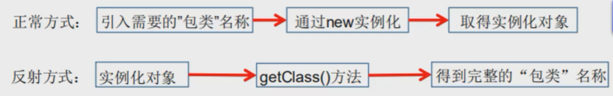

# 注解和反射
# 注解
# 什么是注解
- Annotation 是从 JDK5.0 开始引入的新技术．
- Annotation 的作用：
- 不是程序本身，可以对程序作出解释。（这一点和注释（comment）没什么区别）
- 可以被其他程序（比如：编译器等）读取。
- Annotation 的格式：
- 注解是以 "@注释名" 在代码中存在的，还可以添加一些参数值。例如:@SuppressWarnings (value="unchecked").
- Annotation 在哪里使用？
- 可以附加在 package，class，method，field 等上面，相当于给他们添加了额外的辅助信息。
- 我们可以通过反射机制编程实现对这些元数据的访问
内置注解：
- @Override
- 表示重写方法
- @Deprecated
- 表示该方法已废弃或有更好的替代方法
- @SuppressWarning
- 镇压警告，抑制编译时的警告信息
- 需要传递一个参数才能正常使用
@SuppressWarning("all") @SuppressWarning("unchecked") ...
# 元注解
- 元注解的作用就是负责注解其他注解，Java 定义了 4 个标准的 meta-annotation 类型，他们被用来提供对其他 annotation 类型作说明．
- 这些类型和它们所支持的类在 java.lang.annotation 包中可以找到.(@Target,@Retention ,Documented , @Inherited)
- @Target: 用于描述注解的使用范围 (即：被描述的注解可以用在什么地方)
- @Retention: 表示需要在什么级别保存该注释信息，用于描述注解的生命周期
- (SOURCE< CLASS< RUNTIME)
- @Document: 说明该注解将被包含在 javadoc 中
- @Inherited: 说明子类可以继承父类中的该注解
# 自定义注解
- 使用 @interface 自定义注解时，自动继承了 java.lang.annotation.Annotation 接口
- 分析:
- interface 用来声明一个注解，格式:public interface 注解名
- 其中的每一个方法实际上是声明了一个配置参数.
- 方法的名称就是参数的名称.
- 返回值类型就是参数的类型 (返回值只能是基本类型，Class , String , enum).
- 可以通过 default 来声明参数的默认值
- 如果只有一个参数成员，一般参数名为 value
- 注解元素必须要有值，我们定义注解元素时，经常使用空字符串，0 作为默认值．
public class AnnotationTest { | |
// 注解可以显式赋值，没有默认值就必须要给注解赋值 | |
@MyAnnotation | |
public void qwq(){ | |
} | |
} | |
@Target({ElementType.METHOD, ElementType.TYPE}) | |
@Retention(RetentionPolicy.RUNTIME) | |
@interface MyAnnotation { | |
// 注解的参数：参数类型 + 参数名（） | |
String name() default ""; | |
} |
# 反射
# 动态语言 VS 静态语言
- 动态语言
- 是一类在运行时可以改变其结构的语言：例如新的函数、对象、甚至代码可以被引进，已有的函数可以被删除或是其他结构上的变化。通俗点说就是在运行时代码可以根据某些条件改变自身结构。
- 主要动态语言：Object-C、C#、JavaScript、PHP、Python 等。
- 静态语言
- 与动态语言相对应的，运行时结构不可变的语言就是静态语言。如 Java、C、C++。
Java 不是动态语言，但 Java 可以称之为 “准动态语言”。即 Java 有一定的动态性，我们可以利用反射机制获得类似动态语言的特性。Java 的动态性让编程的时候更加灵活！
- 与动态语言相对应的，运行时结构不可变的语言就是静态语言。如 Java、C、C++。
# Java Reflection
Reflection (反射）是 Java 被视为动态语言的关键，反射机制允许程序在执行期借助于 Reflection API 取得任何类的内部信息，并能直接操作任意对象的内部属性及方法。
Class c= Class.forName("java.lang.String")
加载完类之后，在堆内存的方法区中就产生了一个 Class 类型的对象（一个类只有一个 Class 对象)，这个对象就包含了完整的类的结构信息。我们可以通过这个对象看到类的结构。这个对象就像一面镜子，透过这个镜子看到类的结构，所以，我们形象的称之为：反射

# 反射机制的应用
Java 反射机制提供的功能：
- 在运行时判断任意一个对象所属的类
- 在运行时构造任意一个类的对象
- 在运行时判断任意一个类所具有的成员变量和方法
- 在运行时获取泛型信息
- 在运行时调用任意一个对象的成员变量和方法在运行时处理注解
- 生成动态代理
# 反射机制的优缺点
优点:
- 可以实现动态创建对象和编译，体现出很大的灵活性
缺点:
- 对性能有影响。使用反射基本上是一种解释操作，我们可以告诉 JVM，我们希望做什么并且它满足我们的要求。这类操作总是慢于直接执行相同的操作。
# 反射的实现
# 反射相关的主要 API：
- java.lang.Class: 代表一个类
- java.lang.reflect.Method: 代表类的方法
- java.lang.reflect.Field: 代表类的成员变量
- java.lang.reflect.Constructor: 代表类的构造器
# Class 类：
在 Object 类中定义了 public final getClass() ，返回值为一个 Class 类，它是 Java 反射的源头，可以通过对象反射求出类的名称就是反射
对象照镜子后可以得到的信息：某个类的属性、方法和构造器、某个类到底实现了哪些接口。对于每个类而言，JRE 都为其保留一个不变的 Class 类型的对象。一个 Class 对象包含了特定某个结构 (classlinterfacelenumlannotation/primitive type/void/[]) 的有关信息。
- Class 本身也是一个类
- Class 对象只能由系统建立对象
- 一个加载的类在 JVM 中只会有一个 Class 实例
- 一个 Class 对象对应的是一个加载到 JVM 中的一个.class 文件
- 每个类的实例都会记得自己是由哪个 Class 实例所生成通过 Class 可以完整地得到一个类中的所有被加载的结构
- Class 类是 Reflection 的根源，针对任何你想动态加载、运行的类，唯有先获得相应的 Class 对象
| 方法名 | 功能说明 |
|---|---|
static ClassforName(String name) | 返回指定类名 name 的 Class 对象 |
Object newlnstance() | 调用缺省构造函数，返回 Class 对象的一个实例 |
getName() | 返回此 Class 对象所表示的实体（类，接口，数组类或 void) 的名称。 |
Class getSuperClass() | 返回当前 Class 对象的父类的 Class 对象 |
Class[] getinterfaces() | 获取当前 Class 对象的接口 |
ClassLoader getClassLoader() | 返回该类的类加载器 |
Constructor[] getConstructors() | 返回一个包含某些 Cconstructor 对象的数组 |
Method getMothed(String name,Class.. T) | 返回一个 Method 对象，此对象的形参类型为 paramType |
Field[] getDeclaredFields() | 返回 Field 对象的一个数组 |
# 获取 Class 类的实例：
- 若已知具体的类，通过类的 class 属性获取，该方法最为安全可靠，程序性能最高。
Class clazz= Person.class;
- 已知某个类的实例，调用该实例的
getClass()方法获取 Class 对象Class clazz = person.getClass();
- 已知一个类的全类名，且该类在类路径下，可通过 Class 类的静态方法
forName()获取，可能抛出ClassNotFoundExceptionClass clazz= Class.forName("demo01.Student");
- 内置基本数据类型可以直接用类名.Type
- 利用 ClassLoader 我们之后讲解
# 哪些类型可以有 Class 对象
- class: 外部类，成员 (成员内部类，静态内部类)，局部内部类，匿名内部类。
- interface: 接口
[]: 数组- enum: 枚举
- annotation: 注解 @interface
- primitive type: 基本数据类型
- void
# 类加载的内存分析
- java 内存
- 堆
- 存放 new 的对象和数组
- 可以被所有线程共享，不会存放别的对象引用
- 栈
- 存放基本变量类型（会包含这个基本类型的具体数值）
- 引用对象的变量（会存放这个引用在堆中的具体地址）
- 方法区（堆中特殊的区域）
- 可以被所有线程共享
- 包含了所有 class 和 static 变量
- 堆
类的加载过程：
当程序主动使用某个类时，如果该类还未被加载到内存中，则系统会通过如下三个步骤来对该类进行初始化：
- 类的加载（Load）
- 将类的 class 文件读入内存，并为之创建一个 java.lang (Class 对象。此过程由类加载器完成
- 类的链接（Link）
- 将类的二进制数据合并到 JRE 中
- 类的初始化（Initialize）
- JVM 负责对类进行初始化
类的加载与 ClassLoader 的理解:
- 加载：将 class 文件字节码内容加载到内存中，并将这些静态数据转换成方法区的运行时数据结构，然后生成一个代表这个类的 java.lang.Class 对象.
- 链接：将 Java 类的二进制代码合并到 JVM 的运行状态之中的过程。
- 验证：确保加载的类信息符合 JVM 规范，没有安全方面的问题
- 准备：正式为类变量 (static) 分配内存并设置类变量默认初始值的阶段这些内存都将在方法区中进行分配。
- 解析：虚拟机常量池内的符号引用（常量名）替换为直接引用（地址) 的过程。
- 初始化:
- 执行类构造器
<clinit>()方法的过程。类构造器<clinit>()方法是由编译期自动收集类中所有类变量的赋值动作和静态 - 代码块中的语句合并产生的。(类构造器是构造类信息的，不是构造该类对象的构造器）。
- 当初始化一个类的时候，如果发现其父类还没有进行初始化，则需要先触发其父类的初始化。虚拟机会保证一个类的
<clinit>()方法在多线程环境中被正确加锁和同步。
- 执行类构造器
# 类加载时的初始化
什么时候会发生类的初始化：
- 类的主动引用 (一定会发生类的初始化)
- 当虚拟机启动，先初始化 main 方法所在的类 new 一个类的对象
- 调用类的静态成员（除了 final 常量) 和静态方法
- 使用 java.lang.reflect 包的方法对类进行反射调用
- 当初始化一个类，如果其父类没有被初始化，则先会初始化它的父类
- 类的被动引用 (不会发生类的初始化)
- 当访问一个静态域时，只有真正声明这个域的类才会被初始化。如：当通过子类引用父类的静态变量，不会导致子类初始化
- 通过数组定义类引用，不会触发此类的初始化
- 引用常量不会触发此类的初始化（常量在链接阶段就存入调用类的常量池中了)
# 类加载器
- 类加载的作用：将 class 文件字节码内容加载到内存中，并将这些静态数据转换成方法区的运行时数据结构，然后在堆中生成一个代表这个类的 java.lang.Class 对象，作为方法区中类数据的访问入口。
- 类缓存：标准的 JavaSE 类加载器可以按要求查找类，但一旦某个类被加载到类加载器中，它将维持加载（缓存）一段时间。不过 JVM 垃圾回收机制可以回收这些 Class 对象
类加载器的作用：
类加载器就是用来吧类装载进内存的。JVM 规范定义了以下类型的类加载器
- 引导类加载器
- 用 C++ 编写的，是 JVM 自带的类加载器，负责 Java 平台核心库，用来装载核心类库。该加载器无法直接获取
- 扩展类加载器
- 负责 jre/lib/ext 目录下的 jar 包或 - Djava.ext.dirs 指定目录下的 jar 包装入工作库
- 系统类加载器
- 负责 java -classpath 或 - Djava.class.path 所指的目录下的类与 jar 包装入工作，是最常用的加载器
双亲委派机制：
类加载器加载类时会先向父类查询是否这个类已经被加载，若父类没有加载也会向上查询，直到查询到根加载器。若没有被加载过才会自己加载。这样的机制是为了防止用户重写基础类，遇到同名类会优先加载自带的基础类。因为基础类最先被加载到 JVM 中。
# 反射的作用
# 反射操作类
- 创建类的对象：调用 Class 对象的 newlnstance () 方法
- 类必须有一个无参数的构造器。
- 类的构造器的访问权限需要足够
- 无参构造器可以直接创建对象，若没有无参构造器，则要在操作的时候明确的调用类中的构造并将参数传递进去之后，才可以实例化操作。
- 步骤如下:
- 通过 Class 类的 getDeclaredConstructor (Class ... parameterTypes) 取得本类的指定形参类型的构造器
- 向构造器的形参中传递一个对象数组进去，里面包含了构造器中所需的各个参数。
- 通过 Constructor 实例化对象
- 步骤如下:
Class c1 = Class.forName("com.test.reflection.User"); | |
// 构造一个对象 | |
User user = (User) c1.newInstance(); | |
System.out.println(user); | |
// 通过构造器构造对象 | |
Constructor constructor = c1.getConstructor(String.class,Integer.class); | |
User qwq = (User) constructor.newInstance("qwq", 001); | |
System.out.println(qwq); | |
// 通过反射调用普通方法 | |
Method setName = c1.getDeclaredMethod("setName", String.class); | |
setName.invoke(user,"bbmb");//invoke 激活 (对象，参数) | |
System.out.println(user); | |
// 通过反射操作属性 | |
Field id = c1.getDeclaredField("id"); | |
id.setAccessible(true);//id 为 private 属性，不这样就无法设置该属性的指 | |
id.set(user,1); | |
System.out.println(user); |
通过反射，调用类中的方法，通过 Method 类完成。
- 通过 Class 类的 getMethod (String name,Class...parameterTypes) 方法取得一个 Method 对象，并设置此方法操作时所需要的参数类型。
- 之后使用 Object invoke (Object obj, Object [] args) 进行调用，并向方法中传递要设置的 obj 对象的参数信息。

Object invoke(Object obj,Object ... args)
- Object 对应原方法的返回值，若原方法无返回值，此时返回 null
- 若原方法若为静态方法，此时形参 Object obj 可为 null
- 若原方法形参列表为空，则 Object [] args 为 null
- 若原方法声明为 private, 则需要在调用此 invoke () 方法前，显式调用方法对象的 **setAccessible (true)** 方法，将可访问 private 的方法。
setAccessible
- Method 和 Field、Constructor 对象都有 setAccessible () 方法。
- setAccessible 作用是启动和禁用访问安全检查的开关。
- 参数值为 true 则指示反射的对象在使用时应该取消 Java 语言访问检查。
- 提高反射的效率。如果代码中必须用反射，而该句代码需要频繁的被调用，那么请设置为 true。
- 使得原本无法访问的私有成员也可以访问
- 参数值为 false 则指示反射的对象应该实施 Java 语言访问检查

# 反射操作泛型
- Java 采用泛型擦除的机制来引入泛型，Java 中的泛型仅仅是给编译器 javac 使用的，确保数据的安全性和免去强制类型转换问题，一旦编译完成，所有和泛型有关的类型全部擦除。
- 为了通过反射操作这些类型，Java 新增了 ParameterizedType，GenericArrayType，TypeVariable 和 WildcardType 几种类型来代表不能被归一到 Class 类中的类型但是又和原始类型齐名的类型.
- ParameterizedType: 表示一种参数化类型，比如
Collection<String> - GenericArrayType: 表示一种元素类型是参数化类型或者类型变量的数组类型
- TypeVariable: 是各种类型变量的公共父接口
- WildcardType: 代表一种通配符类型表达式
- ParameterizedType: 表示一种参数化类型，比如
# 反射操作注解
ORM:
- Object Relationship Mapping：对象关系映射
- 类和表结构对应
- 属性和字段对应
- 对象和记录对应
- 利用注解和反射完成类和表结构的映射关系
// 反射操作注解 | |
public class ORMTest { | |
public static void main(String[] args) throws Exception { | |
Class<?> c1 = Class.forName("com.test.reflection.Student"); | |
// 通过反射获得注解 | |
Annotation[] annotations = c1.getAnnotations(); | |
for (Annotation annotation : annotations) { | |
System.out.println(annotation); | |
} | |
// 获取注解的 value 值 | |
Table table = c1.getAnnotation(Table.class); | |
System.out.println(table.value()); | |
// 获得类指定的注解 | |
java.lang.reflect.Field name = c1.getDeclaredField("name"); | |
Field annotation = name.getAnnotation(Field.class); | |
System.out.println(annotation); | |
} | |
} | |
@Table("students") | |
class Student{ | |
@Field(columnName = "id",type = "int",length = 10) | |
private int id; | |
@Field(columnName = "age",type = "int",length = 10) | |
private int age; | |
@Field(columnName = "name",type = "varchar",length = 255) | |
private String name; | |
public Student() { | |
} | |
public Student(int id, int age, String name) { | |
this.id = id; | |
this.age = age; | |
this.name = name; | |
} | |
public int getId() { | |
return id; | |
} | |
public void setId(int id) { | |
this.id = id; | |
} | |
public int getAge() { | |
return age; | |
} | |
public void setAge(int age) { | |
this.age = age; | |
} | |
public String getName() { | |
return name; | |
} | |
public void setName(String name) { | |
this.name = name; | |
} | |
@Override | |
public String toString() { | |
return "Student{" + | |
"id=" + id + | |
", age=" + age + | |
", name='" + name + '\'' + | |
'}'; | |
} | |
} | |
// 类的注解 | |
@Target(ElementType.TYPE) | |
@Retention(RetentionPolicy.RUNTIME) | |
@interface Table{ | |
String value(); | |
} | |
// 属性的注解 | |
@Target(ElementType.FIELD) | |
@Retention(RetentionPolicy.RUNTIME) | |
@interface Field{ | |
String columnName(); | |
String type(); | |
int length(); | |
} |